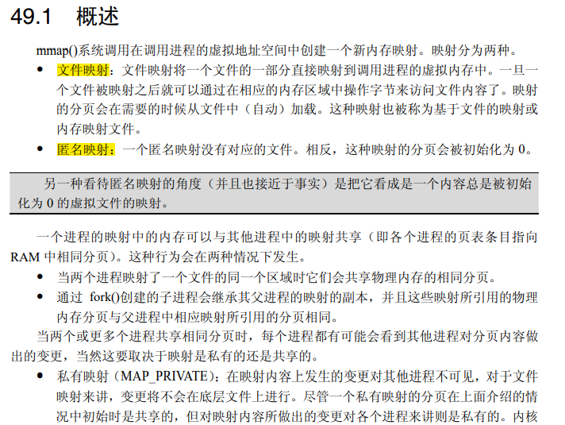
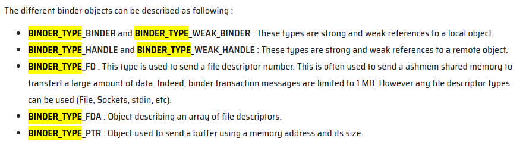

Binder IPC
背景概述
Binder是一种基于Linux系统的进程间通信方式。起源于OpenBinder，经过多次公司转手开发，binder驱动程序在2014年左右已经合入到linux内核。
特点：
- 快速、单次拷贝。基于每个进程(
ProcessState::self()->init->open_driver(),mmap)打开Binder驱动文件并mmap了一部分内存，以用于接受transaction数据。在通信时Binder只需要将数据从发起进程的用户空间写入到目标进程的mmap虚拟内存地址即可（在安卓8之前是三次拷贝，额外的两次在Parcel的序列化、反序列化，详见下文）。 - 面向对象。开发者友好。native或者java侧，都可以拿到服务接口的proxy（native靠模板和宏展开，java靠aidl生成），可以直接像调用本地对象的方法一样访问服务进程的功能。
- 安全/可订阅（死亡信息）
争议：由于linux缺乏对高速ipc的支持，出现了多种针对高速ipc的方式。而binder的争议主要在于，对同一个设备文件标识符，即
dev/binder，在不同进程中的行为是不一样的。这个和大部分人的预期不符。 在争执了一段时间后还是合入了Linux，并且也被劝告它并不好用，使用者需要自行负责。
设计概述
每个进程都可以通过访问dev/binder标识符，来和binder驱动程序通信。而binder驱动程序提供了ipc的所需所有功能接口。
情景化思考：
思考这样一个问题，进程A，要和一个服务B通信，这个服务B既包括系统内置的系统服务，也包括用户应用提供的服务。而服务会动态变化，因此对于进程A来说，想要硬编码一个服务地址，并不可取，合理的设计应该是SPI，即ServiceProviderInterface，或者SL即ServiceLocator设计模式。于是应该有一个固定的服务地址，它所提供的核心服务便是查询其他服务的地址。
而ServiceManager，对应的handle:0，就是这个固定地址的系统服务，所扮演的角色就是服务管理器。它自己需要从binder驱动的ioctl来设置自己是管理者。而其他的服务进程需要借助binder驱动的ioctl来和serviceManager通信，调用它的addService服务来注册自己的服务。而对于进程A，则是依靠binder驱动ioctl来从serviceManager中获取某服务，比如传入特定枚举，以获得该枚举对应服务的IBinder，再转为Proxy来调用目标服务的功能。调用目标服务的功能时，本质上和serviceManager获取服务时的通信也没区别。

预备知识
在正式开始前需要先明确一些基本的知识。
alloc, malloc, calloc
alloc在栈上分配内存。 malloc是只分配内存，但需要Memset后才能访问。 而calloc是分配内存后，可以直接访问（都填0）。后两者是在进程堆上分配。
kzalloc, kmalloc
k前缀表示是从Kernel调用，用以区分从用户空间的调用。都是在内存堆中分配。前者会清零，后者不会。
mmap


current
即当前的进程task_struct
pid tid tgid
pid=processId, tid=threadId。
在linux，线程在内核所维护的任务数据结构和进程一致，都是task_struct，所以tid就是线程对应task_struct里面的pid。而pid实际上是进程对应task_struct里面的tgid。也就是线程组id。对进程中的主线程来说，tid = pid = tgid。
因此会看到在binder driver里，binder_ioctl中对binder_thread的获取即当前线程的获取方式是在flip->privateData(BinderProc)对红黑树数据结构里的节点记录根据current->pid来比对查询。如果查询不到，则创建新的binder_thread节点插入其中。
通信流程描述
IBinder BBinder BpBinder
IBinder中包含transact等方法，有两个关键子类：
BBinder（理解为Service的实现端），也就是真正实现了服务接口，一般在实现类中，等待Binder框架调用其onTransact->并解包数据，进而分发到接口方法上。BpBinder（理解为Client端），也就是服务接口的Proxy。客户端调用Proxy，Proxy负责封装数据、转为Parcel，进行后续的transact。
Parcel在writeBinder时，如果是写入BBinder，也就是服务实现端，会记录binder_object_type: binder_type_binder。若是代理端，则是binder_type_handle.这两种类型，会在binder驱动的binder_transaction方法中对应不同的行为。
//已精简
status_t BpBinder::transact(
uint32_t code, const Parcel& data, Parcel* reply, uint32_t flags)
{
status = IPCThreadState::self()->transact(binderHandle(), code, data, reply, flags);
return status;
}
IPCThreadState，值得注意的是这里的binderHandle()，因为它将用于在此进程对应的Binder驱动中binder_proc结构里检索目标进程的binder_ref_node。换句话说，BpBinder的transact方法虽然没暴露handle参数，但它的内部成员mHandle在BpBinder构造时便得到了此代理所对应的在该进程中的handle值。
更进一步来讲，BpBinder的创建主要分两种：
- handle为0表示
ServiceManager的BpBinder。 - 通过
ServiceManager的功能接口得到的返回结果里包含了IBinder，此时会在解包的过程中经由Parcel.readStrongBinder..->Parcel.unflatternBnder：
status_t Parcel::unflattenBinder(sp<IBinder>* out) const
{
switch (flat->hdr.type) {
case BINDER_TYPE_BINDER: {
sp<IBinder> binder =
sp<IBinder>::fromExisting(reinterpret_cast<IBinder*>(flat->cookie));
// 这里代表是本地binder
return finishUnflattenBinder(binder, out);
}
case BINDER_TYPE_HANDLE: {
sp<IBinder> binder =
ProcessState::self()->getStrongProxyForHandle(flat->handle);
// 此路径最终会调用到 BpBinder::PrivateAccessor::create(handle);即创建了此handle的BpBinder
return finishUnflattenBinder(binder, out);
}
}
}

ProcessState
进程单例。构造方法如下：
//已精简
ProcessState::ProcessState(const char* driver)
: mDriverName(String8(driver)),
mDriverFD(-1),
mMaxThreads(DEFAULT_MAX_BINDER_THREADS) {
base::Result<int> opened = open_driver(driver);
// mmap the binder, providing a chunk of virtual address space to receive transactions.
mVMStart = mmap(nullptr, BINDER_VM_SIZE, PROT_READ, MAP_PRIVATE | MAP_NORESERVE,
opened.value(), 0);
mDriverFD = opened.value();
}
static base::Result<int> open_driver(const char* driver) {
int fd = open(driver, O_RDWR | O_CLOEXEC);
status_t result = ioctl(fd, BINDER_VERSION, &vers);
size_t maxThreads = DEFAULT_MAX_BINDER_THREADS;
result = ioctl(fd, BINDER_SET_MAX_THREADS, &maxThreads);
return fd;
}
//已精简
static int binder_open(struct inode *nodp, struct file *filp)
{
proc = kzalloc(sizeof(*proc), GFP_KERNEL);
if (proc == NULL)
return -ENOMEM;
INIT_LIST_HEAD(&proc->todo);
init_waitqueue_head(&proc->freeze_wait);
proc->context = &binder_dev->context;
binder_alloc_init(&proc->alloc);
binder_stats_created(BINDER_STAT_PROC);
proc->pid = current->group_leader->pid;
INIT_LIST_HEAD(&proc->delivered_death);
INIT_LIST_HEAD(&proc->waiting_threads);
filp->private_data = proc;
return 0;
}
static int binder_mmap(struct file *filp, struct vm_area_struct *vma)
{
struct binder_proc *proc = filp->private_data;
return binder_alloc_mmap_handler(&proc->alloc, vma);
}
/**
* binder_alloc_mmap_handler() - map virtual address space for proc
* @alloc: alloc structure for this proc
* @vma: vma passed to mmap()
*
* Called by binder_mmap() to initialize the space specified in
* vma for allocating binder buffers
*
* Return:
* 0 = success
* -EBUSY = address space already mapped
* -ENOMEM = failed to map memory to given address space
*/
int binder_alloc_mmap_handler(struct binder_alloc *alloc,
struct vm_area_struct *vma)
{
alloc->buffer = (void __user *)vma->vm_start;
alloc->pages = kcalloc(alloc->buffer_size / PAGE_SIZE,
sizeof(alloc->pages[0]),
GFP_KERNEL);
buffer->user_data = alloc->buffer;
list_add(&buffer->entry, &alloc->buffers);
buffer->free = 1;
binder_insert_free_buffer(alloc, buffer);
alloc->free_async_space = alloc->buffer_size / 2;
binder_alloc_set_vma(alloc, vma);
mmgrab(alloc->vma_vm_mm);
return 0;
}
int (*open)(struct inode *inode, struct file *filp);。其中，filp是file pointer即文件指针的含义。在驱动程序的open方法中，一般会分配并填充要放进 filp->private_data 的任何数据结构。Binder驱动也不例外，它的flip->private_data是binder_proc结构。
之后在mmap的处理中，由Binder 驱动申请了一块内存并登记在binder_proc结构体中。
IPCThreadState
具体的IPC线程状态，线程内单例，负责IPC事务，构造方法如下：
// 已精简
IPCThreadState::IPCThreadState()
: mProcess(ProcessState::self()){
pthread_setspecific(gTLS, this);
mIn.setDataCapacity(256);
mOut.setDataCapacity(256);
}
status_t IPCThreadState::transact(int32_t handle,
uint32_t code, const Parcel& data,
Parcel* reply, uint32_t flags)
{
err = writeTransactionData(BC_TRANSACTION, flags, handle, code, data, nullptr);
if ((flags & TF_ONE_WAY) == 0) {
if (reply) {
err = waitForResponse(reply);
} else {
Parcel fakeReply;
err = waitForResponse(&fakeReply);
}
} else {
err = waitForResponse(nullptr, nullptr);
}
return err;
}
writeTransactionData会把Parcel数据进一步包装为binder_transaction_data数据结构。这里面有cmd是BC_TRANSACTION，code是对服务端方法的编号。cmd的取值分为BC_前缀和BR_前缀，由Binder驱动发起的是BR_前缀，由进程发起的是BC_前缀。

// 已精简
status_t IPCThreadState::waitForResponse(Parcel *reply, status_t *acquireResult)
{
while (1) {
if ((err=talkWithDriver()) < NO_ERROR) break;
cmd = (uint32_t)mIn.readInt32();
switch (cmd) {
case BR_TRANSACTION_COMPLETE:
if (!reply && !acquireResult) goto finish;
break;
case BR_REPLY:
{
binder_transaction_data tr;
err = mIn.read(&tr, sizeof(tr));
if (reply) {
if ((tr.flags & TF_STATUS_CODE) == 0) {
reply->ipcSetDataReference(
reinterpret_cast<const uint8_t*>(tr.data.ptr.buffer),
tr.data_size,
reinterpret_cast<const binder_size_t*>(tr.data.ptr.offsets),
tr.offsets_size/sizeof(binder_size_t),
freeBuffer);
} else {
err = *reinterpret_cast<const status_t*>(tr.data.ptr.buffer);
}
} else {
}
}
default:
err = executeCommand(cmd);
if (err != NO_ERROR) goto finish;
break;
}
}
return err;
}
// 大幅精简
status_t IPCThreadState::talkWithDriver(bool doReceive)
{
binder_write_read bwr;
do {
if (ioctl(mProcess->mDriverFD, BINDER_WRITE_READ, &bwr) >= 0)
err = NO_ERROR;
} while (err == -EINTR);
return err;
}
waitForResponse的工作主要是准备binder_write_read数据，通过ioctl提交此数据。等待返回结果。
Binder 驱动
static long binder_ioctl(struct file *filp, unsigned int cmd, unsigned long arg)
{
struct binder_proc *proc = filp->private_data;
struct binder_thread *thread;
thread = binder_get_thread(proc);
switch (cmd) {
case BINDER_WRITE_READ:
ret = binder_ioctl_write_read(filp, cmd, arg, thread);
break;
case BINDER_SET_MAX_THREADS: {
int max_threads;
if (copy_from_user(&max_threads, ubuf,
sizeof(max_threads))) {
}
proc->max_threads = max_threads;
break;
}
case BINDER_SET_CONTEXT_MGR:
ret = binder_ioctl_set_ctx_mgr(filp, NULL);
break;
}
static int binder_ioctl_write_read(struct file *filp,
unsigned int cmd, unsigned long arg,
struct binder_thread *thread)
{
int ret = 0;
struct binder_proc *proc = filp->private_data;
struct binder_write_read bwr;
if (bwr.write_size > 0) {
ret = binder_thread_write(proc, thread,
bwr.write_buffer,
bwr.write_size,
&bwr.write_consumed);
}
if (bwr.read_size > 0) {
//非阻塞读取
ret = binder_thread_read(proc, thread, bwr.read_buffer,
bwr.read_size,
&bwr.read_consumed,
filp->f_flags & O_NONBLOCK);
if (!binder_worklist_empty_ilocked(&proc->todo))
binder_wakeup_proc_ilocked(proc);
}
if (copy_to_user(ubuf, &bwr, sizeof(bwr))) {
}
return ret;
}
//即先写再读。来看写
static int binder_thread_write(struct binder_proc *proc,
struct binder_thread *thread,
binder_uintptr_t binder_buffer, size_t size,
binder_size_t *consumed)
{
uint32_t cmd;
struct binder_context *context = proc->context;
void __user *buffer = (void __user *)(uintptr_t)binder_buffer;
void __user *ptr = buffer + *consumed;
void __user *end = buffer + size;
while (ptr < end && thread->return_error.cmd == BR_OK) {
int ret;
if (get_user(cmd, (uint32_t __user *)ptr))
return -EFAULT;
ptr += sizeof(uint32_t);
switch (cmd) {
...
case BC_TRANSACTION:
case BC_REPLY: {
struct binder_transaction_data tr;
if (copy_from_user(&tr, ptr, sizeof(tr)))
return -EFAULT;
ptr += sizeof(tr);
binder_transaction(proc, thread, &tr,
cmd == BC_REPLY, 0);
break;
}
case BC_REGISTER_LOOPER:
case BC_ENTER_LOOPER:
case BC_EXIT_LOOPER:
case BC_REQUEST_DEATH_NOTIFICATION:
case BC_CLEAR_DEATH_NOTIFICATION:
case BC_DEAD_BINDER_DONE:
...
}
return 0;
}
// 因为是BC_TRANSACTION，它以copy_from_user系统调用从用户空间把binder_transaction_data拷贝，接下来进入binder_transaction
static void binder_transaction(struct binder_proc *proc,
struct binder_thread *thread,
struct binder_transaction_data *tr, int reply,
binder_size_t extra_buffers_size)
{
if (reply) {
in_reply_to = thread->transaction_stack;
target_proc = target_thread->proc;
target_proc->tmp_ref++;
} else {
if (tr->target.handle) {
struct binder_ref *ref;
ref = binder_get_ref_olocked(proc, tr->target.handle,
true);
ref->node, &target_proc,
&return_error);
}
} else {
target_node = context->binder_context_mgr_node;
}
w = list_first_entry_or_null(&thread->todo,
struct binder_work, entry);
if (!(tr->flags & TF_ONE_WAY) && thread->transaction_stack) {
struct binder_transaction *tmp;
tmp = thread->transaction_stack;
while (tmp) {
struct binder_thread *from;
if (from && from->proc == target_proc) {
atomic_inc(&from->tmp_ref);
target_thread = from;
spin_unlock(&tmp->lock);
break;
}
}
}
}
if (target_thread)
e->to_thread = target_thread->pid;
e->to_proc = target_proc->pid;
t = kzalloc(sizeof(*t), GFP_KERNEL);
INIT_LIST_HEAD(&t->fd_fixups);
tcomplete = kzalloc(sizeof(*tcomplete), GFP_KERNEL);
if (!reply && !(tr->flags & TF_ONE_WAY))
t->from = thread;
else
t->from = NULL;
t->to_proc = target_proc;
t->to_thread = target_thread;
t->code = tr->code;
t->flags = tr->flags;
// 给目标进程分配新的buffer。
t->buffer = binder_alloc_new_buf(&target_proc->alloc, tr->data_size,
tr->offsets_size, extra_buffers_size,
!reply && (t->flags & TF_ONE_WAY), current->tgid);
t->buffer->transaction = t;
t->buffer->target_node = target_node;
// 拷贝数据到目标进程的buffer。
if (binder_alloc_copy_user_to_buffer(
&target_proc->alloc,
t->buffer,
ALIGN(tr->data_size, sizeof(void *)),
(const void __user *)
(uintptr_t)tr->data.ptr.offsets,
tr->offsets_size)) {
}
for (buffer_offset = off_start_offset; buffer_offset < off_end_offset;
buffer_offset += sizeof(binder_size_t)) {
struct binder_object_header *hdr;
size_t object_size;
struct binder_object object;
binder_size_t object_offset;
// 拷贝位移量。object_offset到目标Buffer
if (binder_alloc_copy_from_buffer(&target_proc->alloc,
&object_offset,
t->buffer,
buffer_offset,
sizeof(object_offset))) {
}
object_size = binder_get_object(target_proc, t->buffer,
object_offset, &object);
hdr = &object.hdr;
off_min = object_offset + object_size;
switch (hdr->type) {
case BINDER_TYPE_BINDER:
case BINDER_TYPE_WEAK_BINDER: {
struct flat_binder_object *fp;
fp = to_flat_binder_object(hdr);
ret = binder_translate_binder(fp, t, thread);
// 拷贝fp到目标Buffer
if (ret < 0 ||
binder_alloc_copy_to_buffer(&target_proc->alloc,
t->buffer,
object_offset,
fp, sizeof(*fp))) {
}
} break;
case BINDER_TYPE_HANDLE:
case BINDER_TYPE_WEAK_HANDLE: {
struct flat_binder_object *fp;
fp = to_flat_binder_object(hdr);
ret = binder_translate_handle(fp, t, thread);
if (ret < 0 ||
binder_alloc_copy_to_buffer(&target_proc->alloc,
t->buffer,
object_offset,
fp, sizeof(*fp))) {
}
} break;
if (reply) {
// 是reply，原线程添加work: tcomplete
binder_enqueue_thread_work(thread, tcomplete);
binder_pop_transaction_ilocked(target_thread, in_reply_to);
// 目标线程添加work: t->work
binder_enqueue_thread_work_ilocked(target_thread, &t->work);
target_proc->outstanding_txns++;
// 唤醒目标线程
wake_up_interruptible_sync(&target_thread->wait);
} else if (!(t->flags & TF_ONE_WAY)) {
// 若不是one way，原线程添加work: tcomplete
binder_enqueue_deferred_thread_work_ilocked(thread, tcomplete);
// 记录事务栈，以在后续回复时找到上下文
t->need_reply = 1;
t->from_parent = thread->transaction_stack;
thread->transaction_stack = t;
//唤醒目标进程
return_error = binder_proc_transaction(t,
target_proc, target_thread);
} else {
// 是one way，原线程添加work: tcomplete
binder_enqueue_thread_work(thread, tcomplete);
//唤醒目标进程
return_error = binder_proc_transaction(t, target_proc, NULL);
}
return;
}
// 对于发起进程，此时事务完成，thread会被添加tcomplete的binder_work，type为BINDER_WORK_TRANSACTION_COMPLETE
// 对于目标进程，会被添加t->work的binder_work，type为BINDER_WORK_TRANSACTION。 下面是读：
static int binder_thread_read(struct binder_proc *proc,
struct binder_thread *thread,
binder_uintptr_t binder_buffer, size_t size,
binder_size_t *consumed, int non_block)
{
void __user *buffer = (void __user *)(uintptr_t)binder_buffer;
void __user *ptr = buffer + *consumed;
void __user *end = buffer + size;
while (1) {
uint32_t cmd;
if (!binder_worklist_empty_ilocked(&thread->todo))
list = &thread->todo;
else if (!binder_worklist_empty_ilocked(&proc->todo) &&
wait_for_proc_work)
list = &proc->todo;
w = binder_dequeue_work_head_ilocked(list);
switch (w->type) {
case BINDER_WORK_TRANSACTION: {
//目标进程被唤起后读取任务会走到这里
binder_inner_proc_unlock(proc);
t = container_of(w, struct binder_transaction, work);
} break;
case BINDER_WORK_TRANSACTION_COMPLETE:
//这个是发起进程的分支。即tcomplete的binder_work
case BINDER_WORK_TRANSACTION_ONEWAY_SPAM_SUSPECT: {
if (proc->oneway_spam_detection_enabled &&
w->type == BINDER_WORK_TRANSACTION_ONEWAY_SPAM_SUSPECT)
cmd = BR_ONEWAY_SPAM_SUSPECT;
else
cmd = BR_TRANSACTION_COMPLETE;
//将cmd复制到用户空间。以便IPCThreadState读取。
if (put_user(cmd, (uint32_t __user *)ptr))
ptr += sizeof(uint32_t);
} break;
...
if (t->buffer->target_node) {
cmd = BR_TRANSACTION;
} else {
trd->target.ptr = 0;
trd->cookie = 0;
cmd = BR_REPLY;
}
ptr += sizeof(uint32_t);
//将事务复制到用户空间，即读入。
if (copy_to_user(ptr, &tr, trsize)) {
}
ptr += trsize;
}
return 0;
}
唤醒方式
在Linux驱动程序中，会使用wait_list数据结构来处理。
标准场景描述
ServiceManager启动
第一个被启动。除了对binder驱动进行open, mmap之外，还会通过几次ioctl来把自己设置为context manager。此后，会进入binder_loop方法，不断的等待binder驱动数据，再解析执行指令。
服务注册
服务Servcice B注册过程如下：
- Service B 获取ServiceManager。
- 调用IServiceManager.addService。
此外它还需要至少开启一个线程来准备IPC通信，通过ProcessState::startThreadPool ..ThreadLoop.-> IPCThreadState.joinThreadPool()，如main_surfaceflinger.cpp的主方法。
此过程会开启一个线程完全用于IPC。它会调用到IPCThreadState.jinThreadPool来等待通信。
IPCThreadState joinThreadPool() 逻辑本质就是一个死循环，不断进行 IPCThreadState.getAndExecuteCommand()。而此过程则是IPCThreadState.talkWithDriver来获取新的指令，然后调用IPCThreadState.executeCommand来执行。talkWithDriver上面transact时已经提到过，这里不再重复。executeCommand则如下：
//大幅精简
status_t IPCThreadState::executeCommand(int32_t cmd)
{
switch ((uint32_t)cmd) {
case BR_TRANSACTION:
{
Parcel reply;
status_t error;
if (tr.target.ptr) {
// We only have a weak reference on the target object, so we must first try to
// safely acquire a strong reference before doing anything else with it.
if (reinterpret_cast<RefBase::weakref_type*>(
tr.target.ptr)->attemptIncStrong(this)) {
error = reinterpret_cast<BBinder*>(tr.cookie)->transact(tr.code, buffer,
&reply, tr.flags);
reinterpret_cast<BBinder*>(tr.cookie)->decStrong(this);
}
}
if ((tr.flags & TF_ONE_WAY) == 0) {
sendReply(reply, (tr.flags & kForwardReplyFlags));
}
}
break;
...
}
BR_TRANSACTION，即Binder驱动发起事务指令（对应之前的发起进程的BC_TRANSACTION）。此时会看到它将tr.cookie强转为BBinder来调用transact从而到BBinder解包数据，根据code再分发到具体的服务方法调用。以及对reply的回写。
应用进程
应用进程Proc A 需要通过Binder跨进程来调用Service B 的过程如下：
- Proc A 获取
ServiceManager - 此过程仅需要
ProcessState参与。ServiceManager会有一些本地的包装类，以确保在本地只需要创建一个ServiceManagerProxy单例即可。第一次创建时，通过ProcessState::self()->getStrongProxyForHandle(null)即可，也就是创建了一个handle:0的BpBinder。 - 注意：大部分
BpBinder的创建都是由ProcessState进行的，因为它维护了当前进程下的BpBinder列表 - Proc A 调用
IServiceManager的getService(...)方法，获取Service B的Proxy。 - 此时因为
ServiceManagerProxy的本地缓存还没有此类BpBinder（这里的ServiceManagerProxy泛指ServiceManager的本地包装类），需要进行ipc获取。因此需要由IServiceManager发起一次transact来调用服务端的getService方法。其内部Code是GET_SERVICE。 - Proc A在transact过程中，out数据主要是要查询的服务名称。transact的过程主要是对方法调用参数parcel序列化，
BpBinder.transact->...IPCThreadState.transact->talkWithDriver, waitForResponse。而talkWithDriver又是ioctl调用binder_write_read过程，此时的事务数据已经封装为了bwr(binder_write_read)结构体。 - binder驱动侧会通过ioctl调用的描述符参数flip的
privateData，取出Binder_proc结构体，它记录了Binder在该进程上的信息。此字段初始化与ProcessState的初始化有关，详见上面，不再赘述。再从binder_proc的结构体中获取当前线程结构体信息，它是通过binder_proc里面的binder_thread红黑树记录，以current->pid比对。此时已经有了proc,thread两个主要环境数据，然后根据不同ioctl的cmd来处理。 binder_ioctl->binder_ioctl_write_read拷贝了transaction数据之后进入binder_transaction方法。binder_transaction：- 获取targetNode, 以此得到targetProc, targetThread, targetBuffer，也就是确定要写入的目标缓存地址。
- 如果不是回复结果，则看transactionData里若有target.handle，那么直接在当前进程proc的binder_node红黑树记录里面去找就可以了，比对handle。若没有，也就是0，此时把binder驱动中context_manager也就是serviceManager作为targetNode。
- 若是回复，那么直接从thread的transaction_stack里的From内容就可以找到targetThread等。
- 分配空间，拷贝transactionData数据，到target_proc->alloc。
- 在proc，targetProc记录适当的binderNode。主要是在注册服务时，SerivceManager进程的proc记录服务进程的Binder_node_ref。以及在获取服务时，在请求进程的proc记录服务提供进程的binder_node_ref。以此可以确保后面再进行ioctl的时候，binder driver能知道发起进程的handle所指的目标binder_node到底是什么、在哪里。
- 唤醒目标线程。
- 获取targetNode, 以此得到targetProc, targetThread, targetBuffer，也就是确定要写入的目标缓存地址。
- 等待结果。之后读取结果数据。Parcel解包的时候，会readStrongBinder->ProcessState::getStrongProxyForHandle(handle)，ProcessState会检查是否已经有维护，若没有，则构造一个BpBinder返回。
- 将BpBinder转为Proxy，对于native的转化借助宏和模板，对于java的转化，借助aidl生成的Proxy类。此时，就可以对BpBinder调用其transact方法，来得到对应的功能了。也可以使用Proxy直接调用接口方法。
- 用Proxy调用Service B 方法。
- 此时流转到BpBinder->transact，同2.2。不外乎写parcel和解parcel时数据不同，以及handle不同也就是在binder_transaction时，得到的target_node不同，即要写入的目标地址不同、唤醒的线程不同。
三次复制和一次复制
根据官网说法，在安卓8之前其实BinderIPC是三次复制，在安卓8之后是一次复制。减去的两次是序列化和反序列化的过程。详见拓展阅读。用图片来说明下：
三次复制

安卓8之后一次复制

总结
众所周知 Binder IPC 在安卓系统上使用异常普遍，以至于很多时候几乎会忽略它背后的复杂性。我先总结下它的解决方案整体思路，再总结由此得出的更多思考。
- 为了给用户在跨进程时更好的使用体验，几乎像访问本地方法一样调用远程服务方法。为此提供了动态代理，与调用“存根”。将大部分的调用抽象为事务，将方法的参数、名称等编码打包。进而在远端解包还原出方法调用。
- 对于定位远程服务，用户习惯于使用服务名称，即类似互联网域名一样。而对方案内部来说，需要具备把“服务名”解析到具体服务进程的能力。由此需要实现一套进程间的“服务定位器”设计模式。即提供一个众做周知的固定地址作为管理者、服务定位者。后续所有操作皆基于此来互相发现。
- 考虑至此，其实并非一定要用Binder，其他的Linux提供的IPC方式依然能满足这些诉求，Socket也好、pipeline也罢等等。只是Binder给出了一个理论上性能更好的选项。但它不得不借助自定义驱动程序，来让进程内留有一块和该驱动fd关联的mmap映射地址。这块地址用户空间可以访问，而对驱动程序在内核模式下来说，它接收到通信数据后，只需要取出目标进程的mmap映射地址写入数据包即可。
因为这套方案复杂，涉及所有的细节几乎难以做到，由此受到启发是什么？更宽泛的思考是什么？
- 其实是进程的独立环境，使得之间的通信变得较为复杂。安全、沙盒，和更自由的通信，这两者有种博弈的关系。如果未来有更好的方式避免进程崩溃导致的稳定性问题、也有更好的方式规避进程间不安全的访问问题，使得进程之间的隔离不再那么死板，自然就会有更轻松的进程间通信。
- 进程通信往往涉及开发者体验、业务诉求（性能、安全性、可监听）、操作系统层面的考虑。
暂时还没有什么更奇妙的想法了。
拓展阅读
- binder.c
- binder_alloc.c
- ProcessState.cpp
- IPCThreadState.cpp
- BpBinder.cpp
- 良好的Binder概述，包括安卓8的改进
- 另一篇次良好的概述
- Binder在安卓8的改进，由三次拷贝变为真正的一次拷贝。
- 关于Linux系统调用和驱动程序，请参阅“操作系统”section。